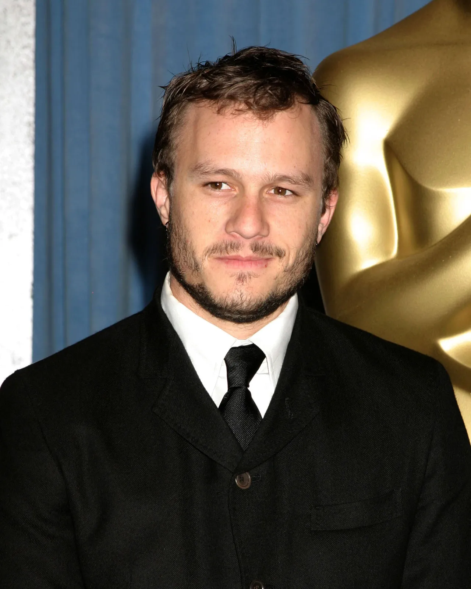

*Heath Ledger (1979 - 2008)* - Australian actor, one of the best actors of his generation. *Quick Facts:* - *Full Name:* Heathcliff Andrew Ledger - *Born:* 4 April 1979, Perth, Australia - *Died:* 22 January 2008, New York, age 28 - *Famous For:* Intense, method-acting style - fully becoming the character *Major Movies:* 1. *10 Things I Hate About You (1999)* - Romantic lead - first Hollywood hit 2. *A Knight's Tale (2001)* - Made him a star 3. *Brokeback Mountain (2005)* - Role of Ennis Del Mar - Oscar nomination for Best Actor. Gay cowboy love story - very bold role for that time. 4. *The Dark Knight (2008)* - *Joker* - This is what he is most remembered for. Considered one of the greatest performances ever in cinema history. *Why his Joker is legendary:* - Locked himself in a hotel room for 6 weeks alone to create Joker's voice, laugh, walk - Wrote a diary as Joker - disturbing thoughts - Did not use CGI, did his own stunts - Improvised scenes - like clapping sarcastically in jail scene - Won *Academy Award for Best Supporting Actor (posthumous)* - after his death Other good films: The Patriot, Monster's Ball, Lords of Dogtown. *Personal Life:* - Dated Michelle Williams (from Dawson's Creek), had daughter Matilda Rose Ledger in 2005 - Known as very shy, artistic, loved chess, photography, directing - Died due to accidental prescription drug overdose - mixed sleeping pills, anxiety medication - no suicide note, was suffering from insomnia and stress during Joker role + breakup. *Legacy:* Directors still say if he had lived, he would have been like Leonardo DiCaprio / Joaquin Phoenix level. His Joker set the bar - Joaquin Phoenix and Barry Keoghan both said they were inspired by him. Want his Joker makeup transformation video or his best scenes list?